Inspired by Paul Hudson's approach in Pro SwiftUI
When you start building apps in SwiftUI, one of the most confusing things is not the code itself — it is understanding when things happen. When does your view appear on screen? When does init get called? Does onAppear run before or after task?
Most beginners deal with this through trial and error. You add a modifier, run the app, and hope for the best. That approach works, but it leaves you guessing. There is a better way: use print statements strategically to turn the SwiftUI lifecycle into something you can actually see.
This article walks you through a hands-on technique to observe exactly what fires, and in what order, every time SwiftUI renders your views.
First things first: what is @main?
Every SwiftUI app has one entry point — a single place where execution begins. That entry point is a struct marked with @main.
Think of it like the front door of your app. When the system launches your app, it walks through that door first. The @main struct conforms to the App protocol, and its body property returns a Scene — usually a WindowGroup — which is what tells SwiftUI "here is the first screen to show".
In a standard Xcode project, you will find this in a file called something like YourAppName.swift. It is small, easy to overlook, and more important than it looks.
The idea: build a print-based radar
The technique is simple. You create a small set of test structs — representing the app, a view, a modifier, an initializer — and you add a print statement inside each one. Then you run the app and watch the console. The order in which the messages appear tells you the exact order in which SwiftUI processes everything.
It sounds obvious, but the insight it gives you is surprisingly deep. You stop guessing and start knowing.
Let's build this step by step.
Step 1: Print from the app entry point
The first thing to instrument is the @main struct itself — specifically its body computed property.
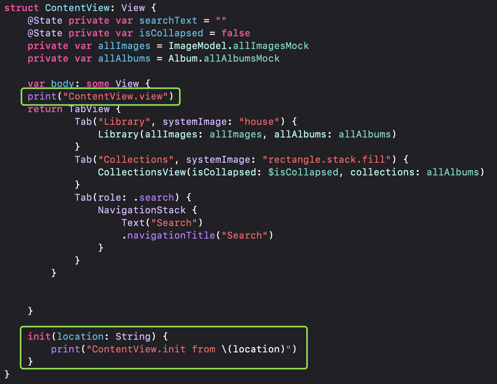
Notice that as soon as you add a print inside a computed property like var body: some Scene, Swift requires you to add an explicit return before the view you are returning. This is because Swift's implicit return only works when the body contains a single expression. Add a second expression — like a print — and the compiler needs you to be explicit.
This catches a lot of beginners off guard. Keep it in mind: if you add a print to a body, you must also add return.
Step 2: Print from a View's body
The same rule applies to any View. Add a print to var body: some View, and you need return before your view.
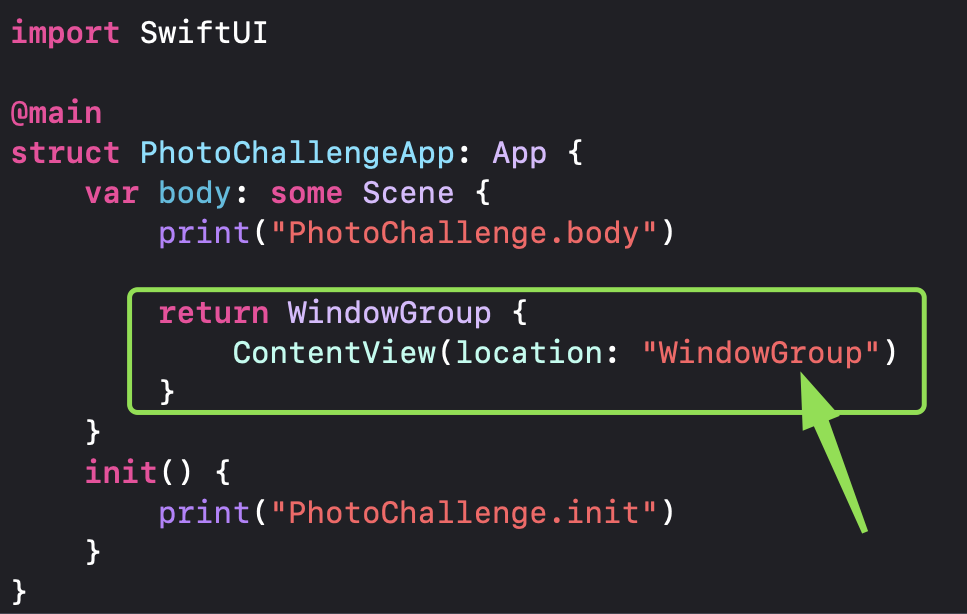
This tells you every time SwiftUI re-evaluates a view's body — which happens more often than you might expect. SwiftUI is very efficient at deciding what to actually redraw on screen, but the body computation itself can be triggered frequently. Seeing it in the console makes that concrete.
Step 3: Print from init
Views in SwiftUI are structs, which means they can be initialized and discarded very quickly. Adding a print to init shows you when and why a view is being created.
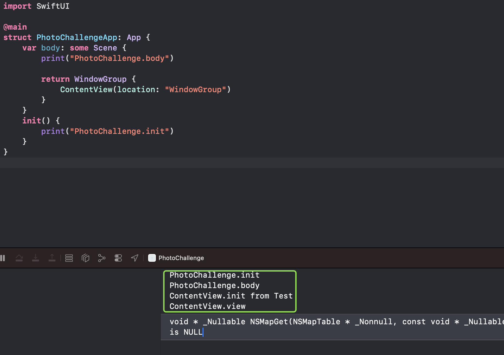
You can pass a label — for example "ContentView init" — so you always know which view is being initialized in the console output. When you have multiple views, this becomes essential for keeping track of what is happening.
Something important to understand: in SwiftUI, initializing a view is not the same as displaying it. A view can be initialized multiple times without ever appearing on screen. The init print tells you SwiftUI created the struct — not that it rendered anything.
Step 4: Add a custom ViewModifier
Modifiers in SwiftUI are views too, which means they go through the same lifecycle. Creating a custom ViewModifier and printing from its body lets you see exactly where it fits in the rendering sequence.
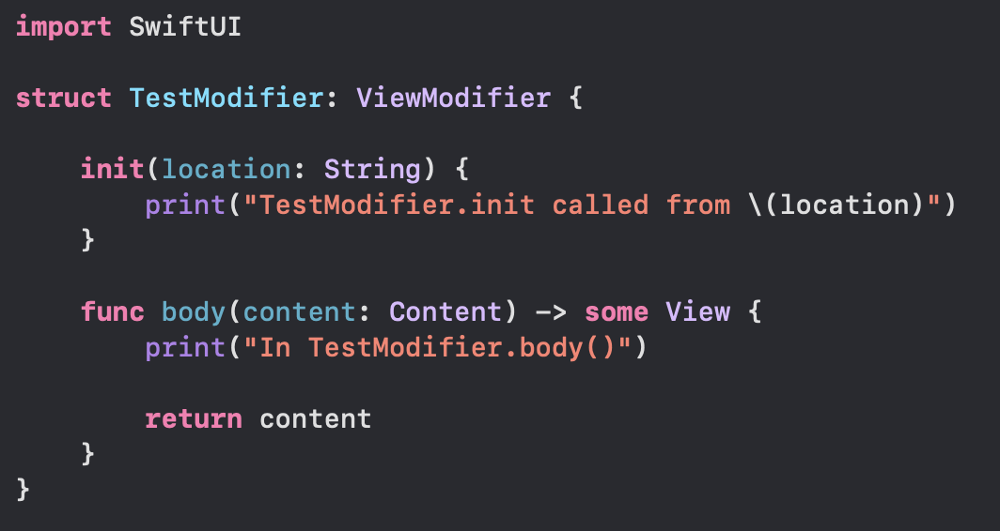
Once the modifier is defined, attach it to your view using .modifier():
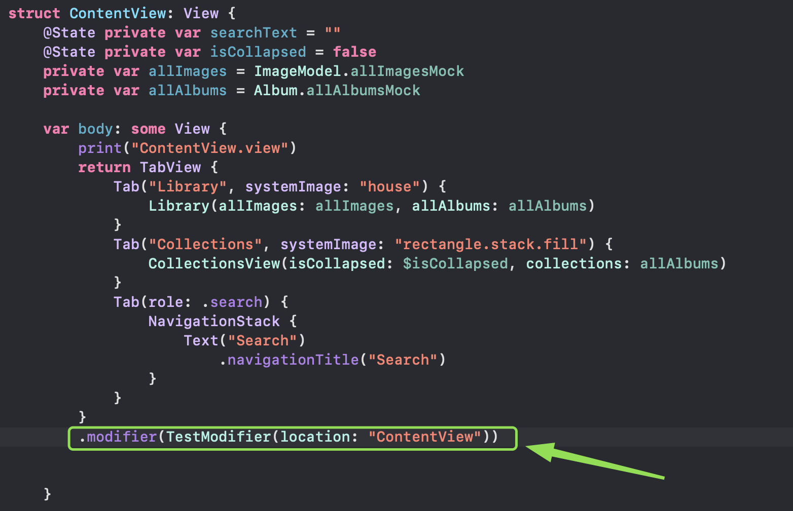
Now when you run the app, you will see the modifier's print appear in the console alongside the view's own print. Pay attention to the order — it is not always what you might assume.
Step 5: Add .task — twice
task is SwiftUI's built-in way to run async work when a view appears. It runs after the view has been rendered and shown on screen. Adding two task modifiers in a row lets you verify that they run independently and in the order they are declared.
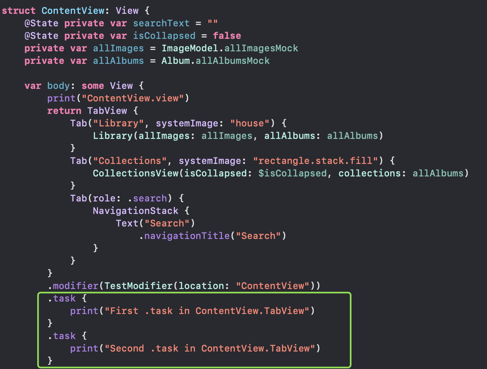
One thing to notice: task runs after the view appears. If you are fetching data from a network and updating state, the user will briefly see the empty state first. That is by design, and understanding this timing helps you build better loading states.
Step 6: Add .onAppear — twice
onAppear is the synchronous counterpart to task. It fires when the view becomes visible. Stacking two of them shows you that both run, and helps you understand how it compares to task in the overall sequence.
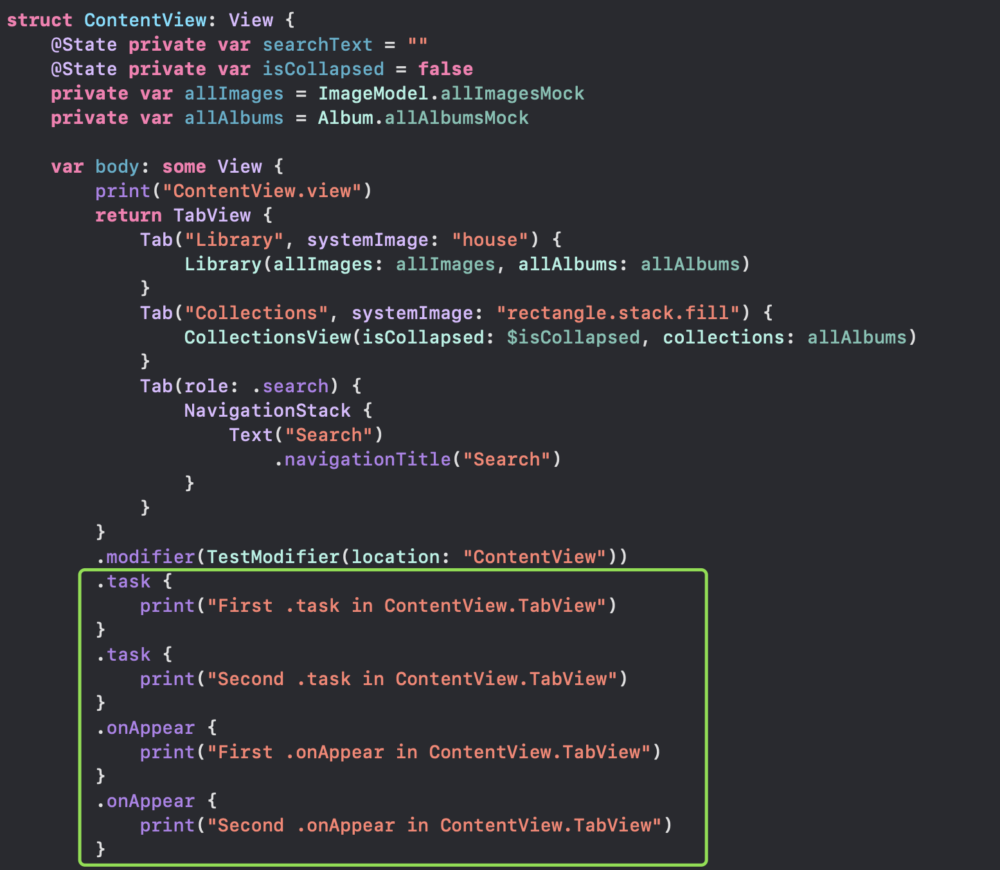
A key question you might already be asking: does onAppear run before or after task? Keep that question in mind — you will see the answer in the final output below.
Step 7: Add a nested view
Real apps are not made of a single view. They have hierarchies — a parent view that contains a child view, which may contain more children. Adding a DetailView inside your ContentView lets you observe how the lifecycle of a parent and its children interleave.
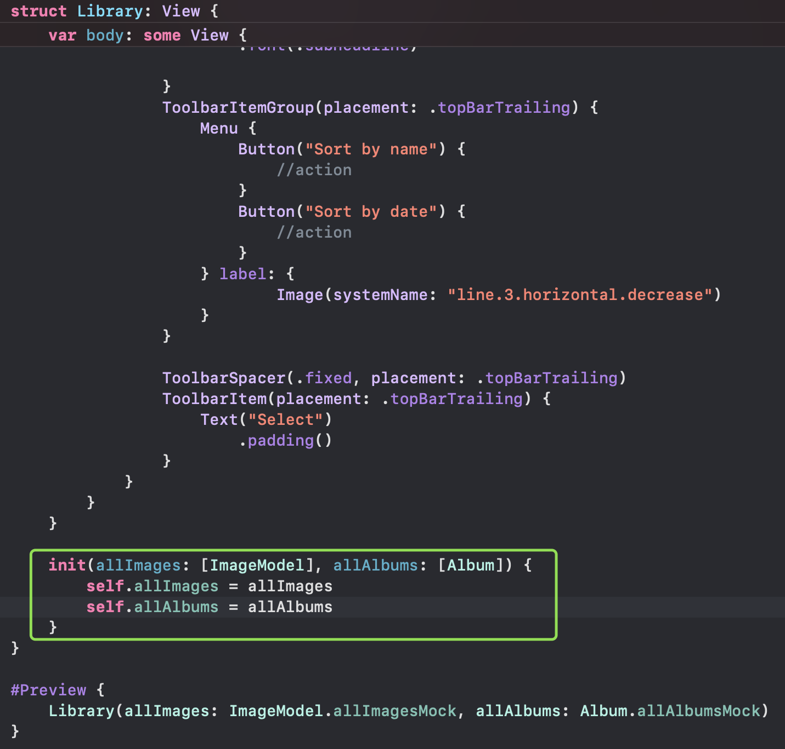
Just like before, add a print to DetailView's init and body. Now when you run the app, the console will show prints from both views, letting you see the parent-child initialization order.
Step 8: Add the full set to the nested view
Finally, give the DetailView the same full treatment: a custom modifier, two task closures, and two onAppear closures — all with their own print statements.
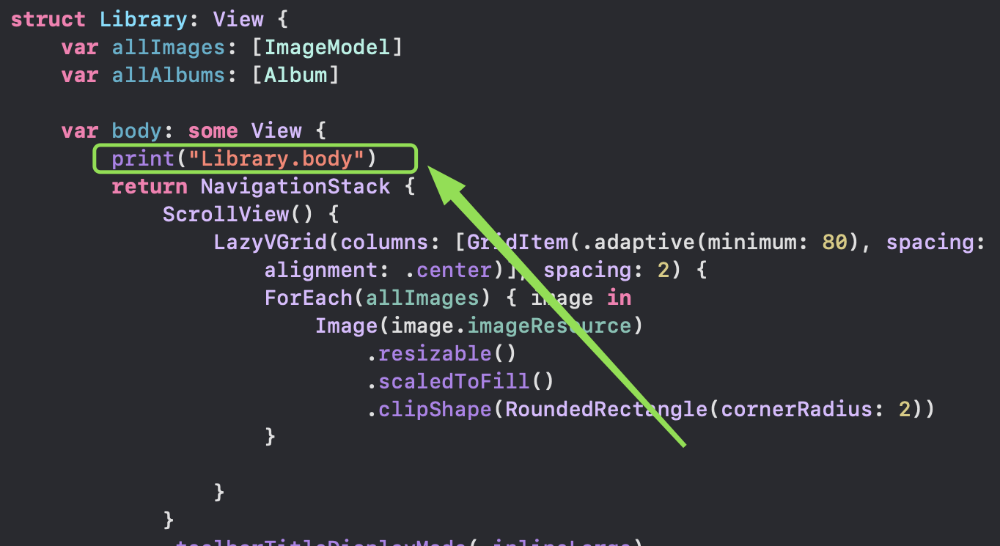
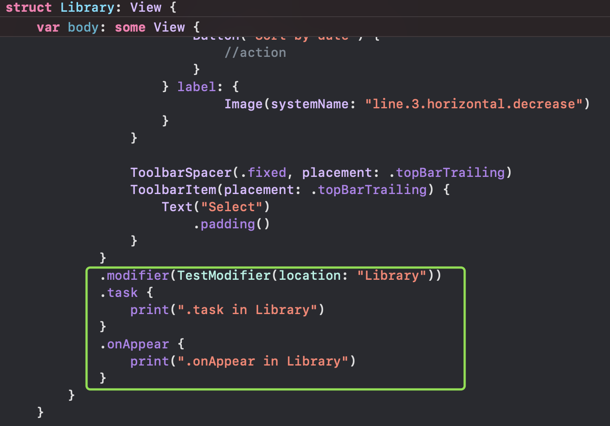
Now you have a complete two-level hierarchy where every significant lifecycle event is instrumented. Running the app will produce a detailed log of everything that happens from the moment the system launches your app to the moment both views are fully on screen.
The full picture: reading the console output
Here is what the console output looks like when you run the complete setup:
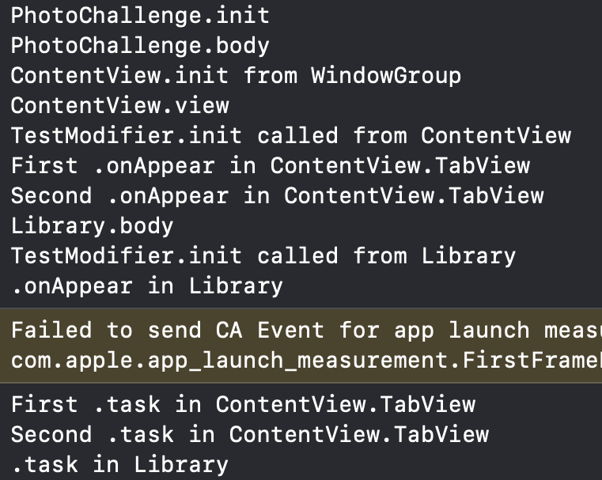
Reading through this output, a few things stand out:
- The
@mainbody runs first — before any view is initialized. - Views are initialized (
init) before their bodies are computed. - The parent view's body runs before the child view's body.
- Custom modifiers run as part of the body evaluation, not separately after it.
onAppearfires beforetask— both run after the view is on screen, butonAppeargoes first.- The child view's
onAppearandtaskfire after the parent's.
Once you see this sequence written out clearly, a lot of common bugs start to make sense. That weird state glitch when navigating? Probably an onAppear firing at the wrong time. That loading spinner that shows even when data is cached? Maybe a task is running when it shouldn't.
Key takeaways
- Add
returnwhen you addprintto a computed property. Swift requires it when the body has more than one expression. - Initializing a view is not the same as displaying it. SwiftUI can create and discard view structs frequently.
onAppearruns beforetask. If you depend on async work being done before synchronous logic, plan accordingly.- The parent lifecycle always leads. Parent
init, parentbody, then childinit, childbody— in that order. - Print statements are a valid debugging tool. They are temporary, but in the early stages of learning SwiftUI, there is nothing more valuable than seeing what actually happens rather than guessing.
The next time you are confused about why a modifier is not working, or why data seems to load at the wrong moment, come back to this technique. Build a small test setup, add prints everywhere, and let the console show you the truth.